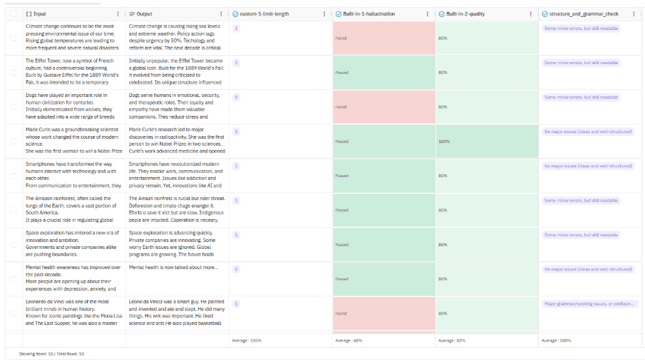

ℹ️ About the project
This was a hands-on product evaluation submitted for a Business Internship at Future AGI, a platform that helps teams test, monitor, and evaluate GenAI outputs with structured, scalable systems. Think of it as the QA + trust layer for large language model-powered features.
The goal of the assignment was to:
- Understand the platform's user base and functionality
- Simulate a real-world use case with GenAI summarization
- Analyze built-in and custom evaluation tools
- Suggest product-level improvements based on friction points
While this was part of a hiring assignment and not a live implementation, I approached it like a PM evaluating the product’s workflow, feature gaps, and UX experience.
Disclaimer: This was a strategic product evaluation project submitted for the Future AGI internship hiring process. No features were developed live.
🚀 Timeline & Execution Overview
This assignment was completed in 3 days and structured like a full-stack product simulation. The process had three parts:
- Platform & user research
- Hands-on product evaluation (with a 10-row GenAI dataset)
- Structured product/UX feedback
Each part was designed to mimic real PM decision loops: assess → simulate → recommend.
1️⃣ Product Understanding: Core Users and Value Prop
Future AGI supports teams building with LLMs and GenAI by offering infrastructure to evaluate and optimize outputs. These are the core user types:
| User Type | Core Pain Point | Platform Value Addition |
|---|---|---|
| AI Engineers | Manual prompt testing, no feedback loop | Structured, repeatable eval & version control |
| Product Managers | Lack of visibility, no clear success metric | Data-backed QA & explainability for decisions |
| Analysts | Too much manual review | Custom automation + output validation tools |
| AI Researchers | No reproducibility or experiment structure | Traceable, iterative experiments |
| Enterprise Teams | Compliance, black-box models | Monitoring, guardrails, and standardization |
2️⃣ Hands-On Simulation: Summary Evaluation Use Case
Use Case: Test quality, factual grounding, and grammar of GenAI-generated summaries
What I did:
- Created a 10-row dataset with ChatGPT (inputs: facts; outputs: summaries)
- Injected deliberate flaws: hallucinated facts, broken grammar, vague or overlong summaries
- Evaluated these using 2 built-in tools and 2 custom metrics
Evaluation Parameters:
| Metric | Type | Purpose |
|---|---|---|
| detect_hallucination | Built-in | Flags fabricated facts |
| summary_quality | Built-in | Scores clarity and informativeness |
| length_within_limit | Custom | Checks for over/under length issues |
| structure_grammar_check | Custom | Grades grammar/syntax into 3 severity buckets |

| Input | GenAI Output | Eval Result | My Observation |
|---|---|---|---|
| “Da Vinci was a painter” | “Da Vinci played basketball” | ✅ Passed | ❌ Hallucinated fact not caught |
Observations and Results
✅ What Worked
- Hallucination detector flagged false info accurately
- Length checker triggered only when rules were broken
- Wide library of built-in evaluations: hallucination, safety, tone, helpfulness
- Prompt-based custom evaluations allow deep flexibility
- Interface is clean and usable even for non-technical teams
❌ What Broke
- "Summary quality" gave 100% to outputs with fake content
- Grammar eval missed obvious typos and syntax errors
- Custom re-eval columns caused infinite loading
- Repeated evaluation graphs used the same column names → confusion
- No option to edit eval settings once run starts
💭 What I’d improve : suggested Fixes & UX Recommendations
Product/UX Suggestions:
- Add timestamped eval run names for traceability
- Let users edit prompt logic, input/output config post-creation
- Include progress bar like “Evaluating row 3 of 10”
- Replace infinite loaders with timeouts or “N/A” status
- Add guided setup wizard for first-time users (mapping preview, tooltips)
Onboarding Feedback:
- My first test broke due to bad input mapping, but there was no error prompt
- Docs weren’t enough → needed interactive validation or sample dataset preview
🎯 Key Learnings
- The best GenAI tools don’t just deliver answers, they help you trust them
- Evaluation UX needs transparency: what ran, what failed, and why
- Prompt-based QA can scale, but only if built with fail safes
- Real PM thinking = observe friction → propose changes → map value
Campaign Assets (From Assignment Submission)
The original dataset, prompt logic, and eval screenshots are available in the full submission. My submission link : https://docs.google.com/document/d/1eBSIcNcad_2EIHc2UC17I-Tys202T1U_fsydcjNfNW4/edit?usp=sharing
This project was a crash course in evaluating not just AI outputs, but also product systems that shape trust and scale. I approached it like a product manager — with user empathy, structured simulation, and solution-driven feedback.
Future AGI has the bones of a great product. With a few user-facing improvements, it could become the default layer of GenAI QA.